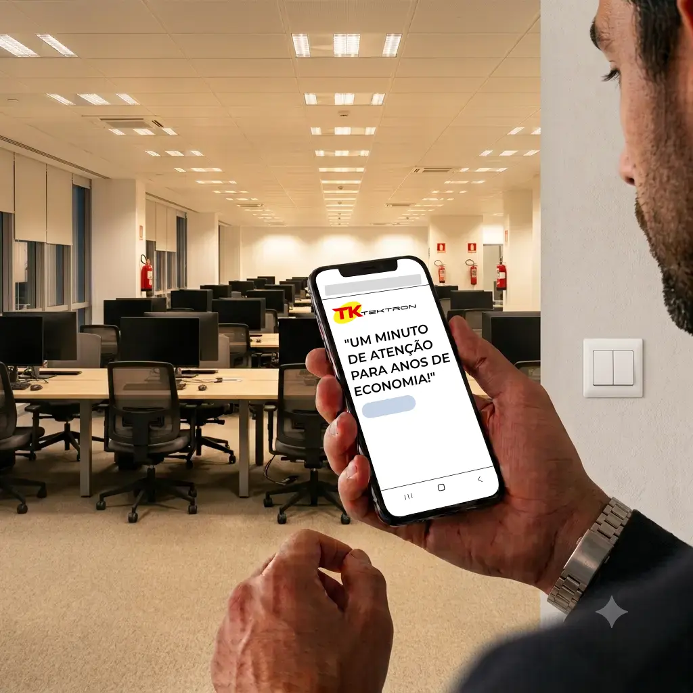

Automatize a iluminação e reduza desperdícios de energia
O sensor acende quando necessário — essa é a parte visível. A economia acontece porque ele apaga automaticamente, e a escolha certa do ponto de instalação e da tecnologia é o que garante que a iluminação realmente acenda quando e onde as pessoas circulam. A Tektron fabrica esses sensores de movimento, fotocélulas e minuterias no Brasil desde 1990, com suporte técnico especializado para essa escolha.
Encontrar a solução certa
Escolha por necessidade
- Trocar o interruptor Automatize a caixa 4x2 já instalada, sem obra e sem trocar o ponto elétrico.
- Instalação no teto Sobrepor, embutir no forro ou cobertura 360° — conforme o tipo de teto e a ocupação do ambiente.
- Iluminação de áreas externas Acionamento por movimento ou por luminosidade, para parede, poste ou área externa coberta.
- Corredores, escadas e grandes ambientes Circulação em ambientes compridos, amplos ou com mais de uma direção.
- Minuteria para condomínio Controle temporizado da iluminação coletiva por pulsadores.
Por que escolher a Tektron?
- Indústria brasileira
- Desde 1990
- Documentação técnica e materiais de apoio
- Suporte técnico especializado
- Automação e economia de energia
Próximo passo
Encontre o produto certo para o seu projeto: